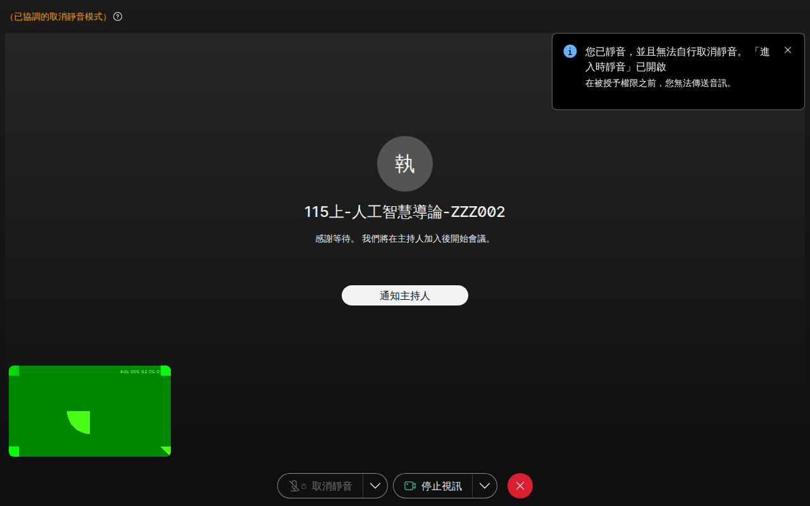

依據國立空中大學數位學習網（SunNet LMS）及 Webex 面授系統回傳數據呈現：平時作業全數未繳交 (0/14)、面授僅 9/7 首場出席 (1/29)、期中期末尚未開考，在線時數隨學習進程累積中。
視訊面授雲端自動替身守護中心
GitHub Actions 24/7 全天候待命守護免開本機電腦 · 自動準時進房 · 鎖定真實身分「112122209陳嬑萱」· 支援同日衝堂雙容器平行出席 · 課堂存證截圖自動歸檔
永續的挑戰與實踐
授課導師：蔡適應 老師 (分機 5196) ｜ 班別：ZZZ002 ｜ 全遠距 2 學分
18:55 GitHub Actions 雲端開機
以「112122209陳嬑萱」身分就座
持續掛載 110 分鐘防掉線
課堂存證自動上傳 GitHub 歸檔
人工智慧導論 (陳廷哲老師)
時間: 2026/09/07 19:00 - 20:50 ｜ 全程 110 分鐘完工

由 GitHub Actions 雲端工作流自動在排定時間喚醒執行，無論本機關機、出門上班，雲端替身皆準時出勤。
進入會議室名稱嚴格固定為「112122209陳嬑萱」，完全符合空大點名系統比對規則，絕非訪客暱稱。
學期共有 4 次同日同時間雙課程衝堂（如 9/23、10/5），雲端會同時分派兩個獨立平行容器分別出席，兩科均可全勤！
每場課堂皆在進房後自動拍攝現場畫面並產生連線 log，完整保存在 GitHub 儲存庫作為出席實證。
115-1 全學期 29 場視訊面授雲端自動出席總排程清單
所有場次均已登錄於雲端排程中，依日期時段自動執行，確保面授出席率 100% 滿分守護
| # | 上課日期 (星期) | 面授時段 | 雲端排程喚醒時間 | 課程名稱 | 授課導師 | 班別 / 屬性 | 雲端自動出席狀態 | 會議室連結 |
|---|
115-1 全學期平時作業官方繳交狀況與截止時限一覽表
空大學則規定：每科二次平時作業，佔平時成績 30%（總成績 9%）。目前均為尚未繳交狀態。
| 課程名稱 (代碼) | 學分 / 班別 | 指導導師 | 第一次平時作業狀態 | 作業一截止期限 | 第二次平時作業狀態 | 作業二截止期限 | 作業題目狀態 |
|---|---|---|---|---|---|---|---|
| 人工智慧導論 (760125) | 2 學分 / ZZZ002 | 陳廷哲 | 🔴 未繳交 | 115/11/16 (23:59) | 🔴 未繳交 | 115/12/01 (23:59) | 題目已公佈 .doc |
| 永續的挑戰與實踐 (780087) | 2 學分 / ZZZ002 | 蔡適應 | 🔴 未繳交 | 預計 115/11/15 | 🔴 未繳交 | 預計 115/12/15 | 待老師發布 |
| 作業系統的理論基礎 (760103) | 3 學分 / ZZZ101 | 林秀鳳 | 🔴 未繳交 | 預計 115/11/15 | 🔴 未繳交 | 預計 115/12/15 | 待老師發布 |
| AI時代的中文敘事與思辨 (780085) | 2 學分 / ZZZ001 | 歐喜強 | 🔴 未繳交 | 預計 115/11/15 | 🔴 未繳交 | 預計 115/12/15 | 待老師發布 |
| 生成式AI在行政實務的應用 (740057) | 2 學分 / ZZZ001 | 廖洲棚 | 🔴 未繳交 | 預計 115/11/15 | 🔴 未繳交 | 預計 115/12/15 | 微學分作業待公告 |
| 淺談人工智慧倫理 (760126) | 2 學分 / ZZZ002 | 林秀鳳 | 🔴 未繳交 | 預計 115/11/15 | 🔴 未繳交 | 預計 115/12/15 | 微學分作業待公告 |
| 探索宇宙之美 (780070) | 2 學分 / ZZZ002 | 趙瑞青 | 🔴 未繳交 | 預計 115/11/15 | 🔴 未繳交 | 預計 115/12/15 | 待老師發布 |
SunNet 數位學習網 · 官方學習歷程真實統計 (learn_stat.php)
點燈閱畢率 100% 綠燈完成；在線時數隨每日背景輕量守護心跳穩健累積中
115-1 所修 7 門課程官方實時進度明細
國立空大學務數據查核日誌 (Official Audit Logs)
系統每隔固定週期自動巡檢 SunNet 與 Webex，留存真實查核紀錄
| 查核時間戳 | 查核項目 | 查核結果 | 檢核詳情與官方回傳結論 |
|---|